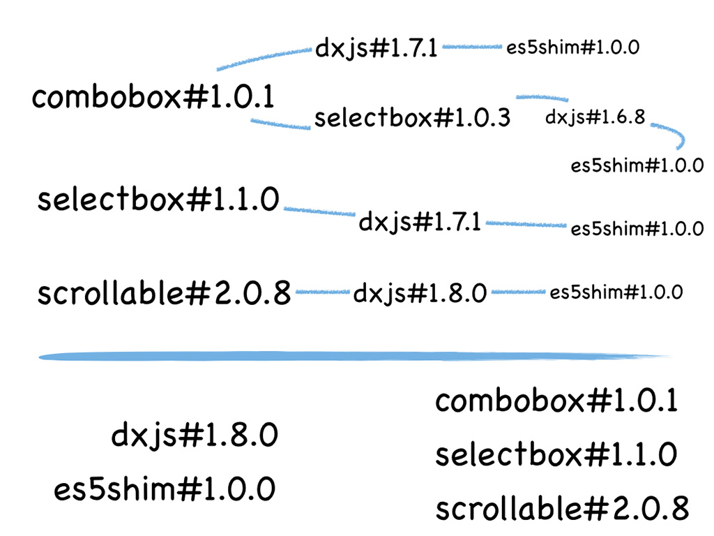
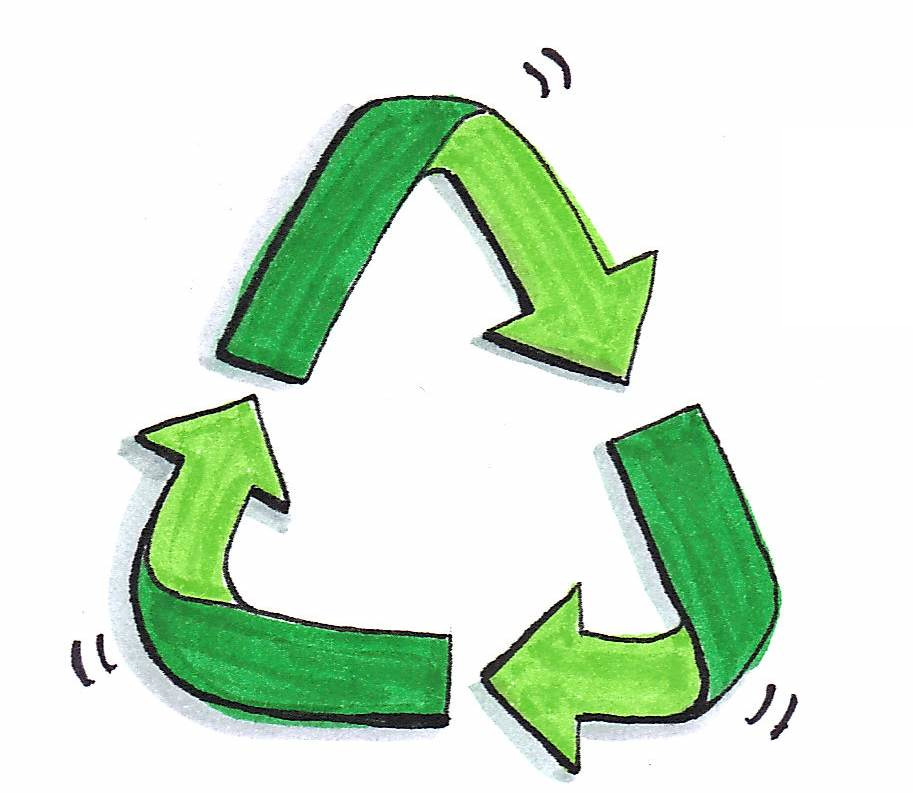

Автоматизация ☠ или смерть!
Web Standards Days
СПб, 28 июня 2014
- Антон Еремеев
- Артём Пархоменко
Опасность!
- HTML
- CSS
- Организация кода
- Управление зависимостями
- Тестирование
☠ HTML ☠
Статические прототипы
- короче цикл внесения изменений
- отвязка от технологии
- не нужен сервер
Проблемы статического HTML
- сложно найти место, где править
- надо поддерживать много файлов
- сложно править таблицы и списки
Проблема 1:
Сложно найти место,
куда вносить исправления
4000 LOC
Проблема 2:
Надо поддерживать много файлов
в актуальном состоянии
Проблема 3:
Таблицы и списки
Бонусы Assemble
- удобная конфигурация
postprocess- огромная библиотека хелперов
- возможность писать свои
☠ CSS ☠
Проблемы CSS
- повторения в селекторах
- отсутствие конфигурации
- префиксы
- свой вариант
Обычно упоминают
- вложенность селекторов
- переменные
- миксины
- префиксы
Колонки без циклов
.columns {
&--column {
float: left;
&-1_2 {
width: 50%;
}
&-1_3 {
width: (100% / 3);
}
&-2_3 {
width: (100% / 3) * 2;
}
&-1_4 {
width: 25%;
}
&-2_4 {
@extend .columns--column-1_2;
}
&-3_4 {
width: 75%;
}
&-1_5 {
width: 20%;
}
&-2_5 {
width: 40%;
}
&-3_5 {
width: 60%;
}
&-4_5 {
width: 80%;
}
&-1_6 {
width: (100% / 6);
}
&-2_6 {
@extend .columns--column-1_3;
}
&-3_6 {
@extend .columns--column-1_2;
}
&-4_6 {
@extend .columns--column-2_3;
}
&-5_6 {
width: (100% / 6) * 5;
}
&-1_8 {
width: (100% / 8);
}
&-2_8 {
@extend .columns--column-1_4;
}
&-3_8 {
width: (100% / 8) * 3;
}
&-4_8 {
@extend .columns--column-1_2;
}
&-5_8 {
width: (100% / 8) * 5;
}
&-6_8 {
@extend .columns--column-3_4;
}
&-7_8 {
width: (100% / 8) * 7;
}
&-1_10 {
width: (100% / 10);
}
&-2_10 {
@extend .columns--column-1_5;
}
&-3_10 {
width: (100% / 10) * 3;
}
&-4_10 {
@extend .columns--column-2_5;
}
&-5_10 {
@extend .columns--column-1_2;
}
&-6_10 {
@extend .columns--column-3_5;
}
&-7_10 {
width: (100% / 10) * 7;
}
&-8_10 {
@extend .columns--column-4_5;
}
&-9_10 {
width: (100% / 10) * 9;
}
}
}Циклы
.columns {
&--column {
for $colsTotal in (2 3 4 5 6 8 10) {
for $col in (1...$colsTotal) {
&-{$col}_{$colsTotal} {
width: $col * (100% / $colsTotal);
}
}
}
}
}Параметризация
$columnsAvailable ?= (2 3 4 5 6 8 10 12 20);
$columnsGap ?= 20px;
.columns {
&--column {
padding-left: $columnsGap;
for $colsTotal in $columnsAvailable {
for $col in (1...$colsTotal) {
&-{$col}_{$colsTotal} {
width: $col * (100% / $colsTotal);
}
}
}
}
}☠ Организация кода ☠
Выбор файловой структуры
- идеология
- специфика
- (БЭМ)
- (цветовые схемы)


создание новых блоков — медленнее
Скаффолдер
Yeoman
- механизм запуска генерации
- логирование
- взаимодействие с пользователем
- процессинг файлов
Скаффолдинг
Скаффолдеров

☠ Управление зависимостями ☠
Подключаем jQuery

Подключаем Marionette


Bower

Добавление зависимостей
bower.json{
"name": "project",
"dependencies": {
"selectbox": "1.1.0",
"combobox": "1.0.1",
"scrollable": "2.0.8"
}
}
$ bower install jquery --save

Что переиспользовать?

Зависимости
dev
- styl файлы
- верстка
- хелперы
- демо данные
prod
- библиотеки
- контролы
- виджеты
Источники зависимостей
- bower-registry
- git-репозиторий
- ссылка на файл или архив
- svn-репозиторий

☠ Тестирование ☠
Что тестировать?
Зависимости
dev
- styl файлы
- верстка
- хелперы
prod
- библиотеки
- контролы
- виджеты
Unit-тесты в браузере
- создать spec файл
- подключить тесты/фреймворки
- открыть все целевые браузеры
Такой TDD нам не нужен

karma.conf.js
module.exports = function(config) {
config.set({
basePath: '',
frameworks: ['jasmine'],
files: [
'src/dx.*.js',
'test/dx.*.unit.spec.js'
],
browsers: ['PhantomJS', 'Chrome']
});
};Karma-runner
- запуск браузеров
- любой тестовый фреймворк
- file watchers
- препроцессинг любой сложности
- быстрая обратная связь
Пользовательские события
—
это тоже API
ng-scenario
- легко настроить
- совместим с Karma
- строгое API
- расширяемое API
Пишем кастомный скроллбар
Тестируем скроллбар
it('should scroll when bar dragged', function() {
mouseDown('.scrollbar-vertical .scrollbar--bar', {
clientY: 20,
bubbles: true
});
mouseMove('body', {
clientY: 76,
bubbles: true
});
mouseUp('body', {
clientY: 1000,
bubbles: true
});
expect(element('.foo').scrollTop()).toBe(100);
});ТЕСТИРУЙ!
☠
Инструменты
☠
Таск-раннер
Это ещё не всё!
- линтовка
- конкатенация, минификация
- спрайты, оптимизация картинок
- запуск дев-сервера
- релиз новой версии
- rhr.me/pres/automation
npm scripts
$ npm install
$ npm test
$ npm run build
$ npm run release